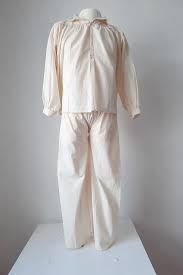
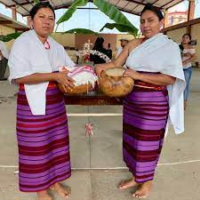

vestimenta típica
Mujeres: Huipil y mandil.
Hombres: Calzón de manta y cotones.
Vestimenta Hombre
Ejemplo:
Vestimenta mujer
Ejemplo:
Esta fue la ropa tipica en la población tiempo atras, actualmente ese tipo de ropa fue olvidada y remplazada por la ropa moderna que estamos acostumbrados a usar. Pero estan volviendo a motivar a las personas para volver a usar esa ropa típica.